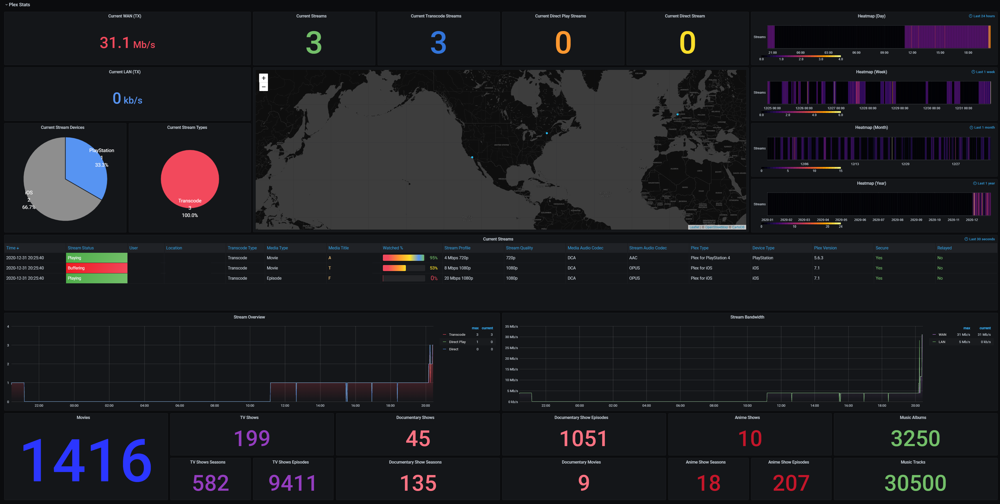
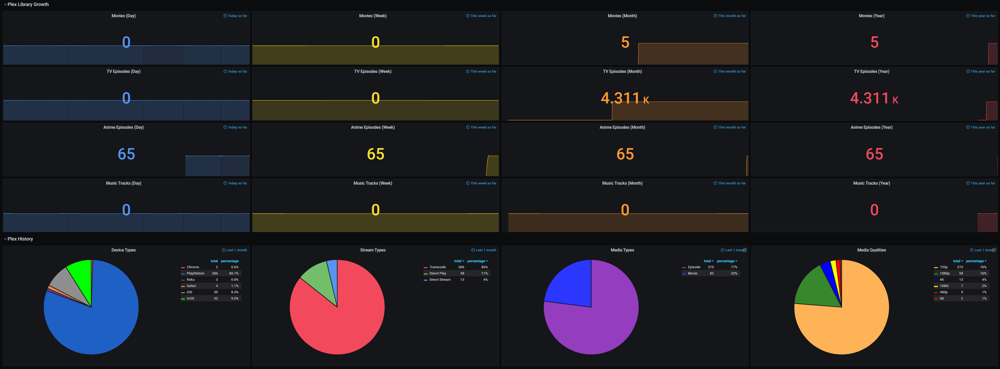
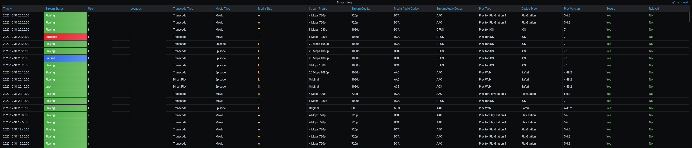

Ultimate UNRAID Dashboard 1.5.x
The Ultimate UNRAID Dashboard Version 1.5 is here! This is another HUGE 😁 update adding INTEGRATED PLEX Monitoring via Varken/Tautulli. This update is loosely derived from the official Varken dashboard, but I stripped it down to the bolts, modded the crap out of it, and streamlined it with a straight Plex focus. Honestly, the only code that sill remains from their official dash is the single geo-mapping graph, as it is not actually an editable panel, but rather straight JSON code. I wanted to say thank you to that team for providing a great baseline to start from, and all of their previous work!
The UUD Version 1.5 adds 50 new Panels within 3 new sections. I have placed these strategically within the UUD right below the Overwatch section, as this is the second data set that I would want to see, right after my overall server health. As always, with greater features, comes a greater need for plugins and dependencies. I have provided links and resources below to help you along.
New Dependencies
- Install guides/tutorials:
- Dockers:
- Varken (Install with default setup / Follow current project install guide)
- Tautuilli (Install with default setup / Follow current project install guide)
- Docker AppData:
- Varken config (Follow varken install guide)
- New Grafana data source:
- "Varken"
- New Grafana plugins
- Pie Chart Panel
- Run following command in Docker: grafana-cli plugins install grafana-piechart-panel
- Run following command in Docker:
grafana-cli plugins install grafana-piechart-panel
- World Map
- Run following command in Docker: grafana-cli plugins install grafana-worldmap-panel
- Run following command in Docker:
grafana-cli plugins install grafana-worldmap-panel
- Pie Chart Panel
- Third party:
- FREE GeoLite2 license registration (Follow Varken install guide)
- Without this, the MAP WILL NOT WORK.
- FREE GeoLite2 license registration (Follow Varken install guide)
Please Note: This release is an example tailored to MY Plex setup/library. The intent here is that you will take this and modify it for your Plex Library/Setup. You have everything you require to template new panels and to add new media sections as needed!
Highlights
- Real time Plex monitoring
- Extremely detailed breakdown of all current streams
- Current number of streams
- Internal and external streaming bandwidth breakdown
- Stream origination (geo location) with interactive map
- Streaming types
- Streaming devices
- Detailed user monitoring
- Current library statistics broken out by library sections
- Plex library growth
- Plex library growth over time (day/week/month/year)
- Currently templated for following media sections
- TV shows
- Movies
- Documentary TV shows
- Documentary movies
- Anime shows
- Music
- You can add more...
- Currently templated for following media sections
- Plex library growth over time (day/week/month/year)
- Historical Plex monitoring
- Heat maps to see your overall streaming saturation (last day/week/month/year)
- Device types (last month)
- Stream types (last month)
- Media types (last month)
- Media streaming qualities (last month)
- Stream log (last week with limit of last 1,000 for performance reasons)
- Log captures all streaming activity via 10 minute intervals
Screenshots
  